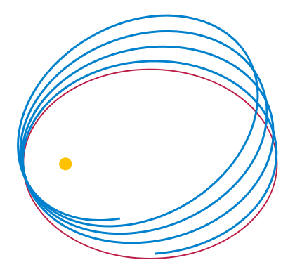

Теоретическое введение
Гравита́ция (притяже́ние, всеми́рное тяготе́ние, тяготе́ние) (от лат. gravitas«тяжесть»)— универсальное фундаментальное взаимодействие между всеми материальными телами. В приближении малых (по сравнению со скоростью света) скоростей и слабого гравитационного взаимодействия описывается теорией тяготения Ньютона, в общем случае описывается общей теорией относительности Эйнштейна. В квантовом пределе гравитационное взаимодействие предположительно описывается квантовой теорией гравитации, которая ещё не разработана.
Гравитация играет крайне важную роль в структуре и эволюции Вселенной (устанавливая связь между плотностью Вселенной и скоростью её расширения), определяя ключевые условия равновесия и устойчивости астрономических систем. Без гравитации во Вселенной не было бы планет, звёзд, галактик, чёрных дыр.
Гравитационное притяжение

В рамках классической механики гравитационное притяжение описывается законом всемирного тяготения Ньютона, который гласит, что сила гравитационного притяжения между двумя материальными точками массы m1 и m2 , разделёнными расстоянием r , пропорциональна обеим массам и обратно пропорциональна квадрату расстояния — то есть: .svg)
Здесь G — гравитационная постоянная, равная примерно 6,67×10−11 м³/(кг·с²). Этот закон выполняется в приближении при малых по сравнению со скоростью света v << c скоростей и слабого гравитационного взаимодействия (если для изучаемого объекта, расположенного на расстоянии R от тела массой G, величина ). В общем случае гравитация описывается общей теорией относительности Эйнштейна.
Закон всемирного тяготения — одно из приложений закона обратных квадратов, встречающегося также и при изучении излучений (см., например, Давление света), и являющегося прямым следствием квадратичного увеличения площади сферы при увеличении радиуса, что приводит к квадратичному же уменьшению вклада любой единичной площади в площадь всей сферы.
Гравитационное поле, так же как и поле силы тяжести, потенциально. Это значит, что можно ввести потенциальную энергию гравитационного притяжения пары тел, и эта энергия не изменится после перемещения тел по замкнутому контуру. Потенциальность гравитационного поля влечёт за собой закон сохранения суммы кинетической и потенциальной энергии и при изучении движения тел в гравитационном поле часто существенно упрощает решение. В рамках ньютоновской механики гравитационное взаимодействие является дальнодействующим. Это означает, что, как бы массивное тело ни двигалось, в любой точке пространства гравитационный потенциал зависит только от положения тела в данный момент времени.
Большие космические объекты — планеты, звёзды и галактики имеют огромную массу и, следовательно, создают значительные гравитационные поля.
Гравитация — слабейшее взаимодействие. Однако, поскольку оно действует на любых расстояниях и все массы положительны, это, тем не менее, очень важная сила во Вселенной. В частности, электромагнитное взаимодействие между телами в космических масштабах мало, поскольку полный электрический заряд этих тел равен нулю (вещество в целом электрически нейтрально).
Также гравитация, в отличие от других взаимодействий, универсальна в действии на всю материю и энергию. Не обнаружены объекты, у которых вообще отсутствовало бы гравитационное взаимодействие.
Из-за глобального характера гравитация ответственна и за такие крупномасштабные эффекты, как структура галактик, чёрные дыры и расширение Вселенной, и за элементарные астрономические явления — орбиты планет, и за простое притяжение к поверхности Земли и падения тел.
Гравитация была первым взаимодействием, описанным математической теорией. Аристотель (IV в. до н. э.) считал, что объекты с разной массой падают с разной скоростью. И только много позже (1589) Галилео Галилей экспериментально определил, что это не так — если сопротивление воздуха устраняется, все тела ускоряются одинаково. Закон всеобщего тяготения Исаака Ньютона (1687) хорошо описывал общее поведение гравитации. В 1915 году Альберт Эйнштейн создал Общую теорию относительности, более точно описывающую гравитацию в терминах геометрии пространства-времени.
Небесная механика
Небесная механика — раздел астрономии, применяющий законы механики для изучения и вычисления движения небесных тел, в первую очередь Солнечной системы (Луны, планет и их спутников, комет, малых тел), и вызванных этим явлений (затмений и проч.).
Законы движения Ньютона
 Закон инерции. Согласно этому закону, в системе отсчета, движущейся без ускорения, каждое тело сохраняет состояние покоя или прямолинейного и равномерного движения, если на него не действует внешняя сила. Это противоречит положению аристотелевой физики, утверждающему, что для поддержания движения тела требуется сила. Закон Ньютона говорит, что внешняя сила необходима только для приведения тела в движение, для его остановки или для изменения направления и величины его скорости. Темп изменения скорости тела по величине или направлению называется «ускорением» и свидетельствует о том, что на тело действует сила. Для небесных тел обнаруженное из наблюдений ускорение служит единственным указателем действующей на них внешней силы. Понятие о силе и ускорении позволяет с единой позиции объяснить движение всех тел в природе: от теннисного мяча до планет и галактик.
Закон инерции. Согласно этому закону, в системе отсчета, движущейся без ускорения, каждое тело сохраняет состояние покоя или прямолинейного и равномерного движения, если на него не действует внешняя сила. Это противоречит положению аристотелевой физики, утверждающему, что для поддержания движения тела требуется сила. Закон Ньютона говорит, что внешняя сила необходима только для приведения тела в движение, для его остановки или для изменения направления и величины его скорости. Темп изменения скорости тела по величине или направлению называется «ускорением» и свидетельствует о том, что на тело действует сила. Для небесных тел обнаруженное из наблюдений ускорение служит единственным указателем действующей на них внешней силы. Понятие о силе и ускорении позволяет с единой позиции объяснить движение всех тел в природе: от теннисного мяча до планет и галактик.
Поскольку объект, движущийся по искривлённой траектории, испытывает ускорение, было заключено, что Земля на её орбите вокруг Солнца постоянно подвергается влиянию силы, которую назвали «гравитацией». Задача небесной механики состоит в том, чтобы определить действующую на небесное тело силу гравитации и выяснить, как она влияет на его движение.
Закон силы. Если к телу приложена сила, то оно движется ускоренно, причем чем больше сила, тем больше ускорение. Однако одна и та же сила вызывает различное ускорение у разных тел. Характеристикой инертности тела (то есть сопротивления ускорению) служит его «масса», которую в первом приближении можно определить как «количество вещества»: чем больше масса тела, тем меньше его ускорение под действием заданной силы. Таким образом, второй закон Ньютона утверждает, что ускорение тела пропорционально приложенной к нему силе и обратно пропорционально его массе. Если из наблюдений известны ускорение тела и его масса, то, используя этот закон, можно вычислить действующую на тело силу (На самом деле Ньютону принадлежит другая, более сложная формулировка этого закона; он утверждал, что сила, действующая на тело, есть скорость изменения импульса этого тела).
Закон противодействия. Этот закон утверждает, что взаимодействующие тела прилагают друг к другу равные по величине, но противоположно направленные силы. Поэтому в системе из двух тел, влияющих друг на друга одинаковой по величине силой, каждое испытывает ускорение, обратно пропорциональное его массе. Значит, лежащая на прямой между ними точка, удалённая от каждого обратно пропорционально его массе, будет двигаться без ускорения, несмотря на то, что каждое из тел движется ускоренно. Эту точку называют «центром масс»; вокруг неё обращаются звёзды в двойной системе. Если одна из звёзд вдвое массивнее другой, то она движется вдвое ближе к центру масс, чем её соседка.
Законы Кеплера
Чтобы изучать движение небесных тел, познакомимся с силой гравитации. Лучше всего это сделать на примере взаимного движения двух тел: компонентов двойной звезды или Земли вокруг Солнца (для простоты предполагая, что другие планеты отсутствуют). К таким системам применимы законы Кеплера. В основе их лежит тот факт, что оба взаимодействующих тела движутся в одной плоскости. Это означает, что и сила гравитации всегда лежит в той же плоскости.
 Закон эллипсов. Первый закон Кеплера утверждает, что планеты Солнечной системы движутся по эллипсам, в одном из фокусов которого находится Солнце. Фактически этот закон справедлив только для системы из двух тел, например для двойной звезды. Но и в Солнечной системе он выполняется довольно точно, поскольку на движение каждой планеты в основном влияет массивное Солнце, а все остальные тела влияют несравненно слабее.
Закон эллипсов. Первый закон Кеплера утверждает, что планеты Солнечной системы движутся по эллипсам, в одном из фокусов которого находится Солнце. Фактически этот закон справедлив только для системы из двух тел, например для двойной звезды. Но и в Солнечной системе он выполняется довольно точно, поскольку на движение каждой планеты в основном влияет массивное Солнце, а все остальные тела влияют несравненно слабее.
 Закон площадей. Если отмечать не только положение планеты, но и время, то можно узнать не только форму орбиты, но и характер движения планеты по ней. Оно подчиняется второму закону Кеплера, утверждающему, что линия, соединяющая Солнце и планету (или компоненты двойной звезды), за равные интервалы времени «заметает» равные площади. Например, эта линия между Солнцем и Землей каждые сутки заметает 2·1014 квадратных километров. Из закона площадей следует, что Солнце притягивает планету строго по прямой, соединяющей их центры. Верно и обратное: для любой центральной силы справедлив второй закон Кеплера.
Закон площадей. Если отмечать не только положение планеты, но и время, то можно узнать не только форму орбиты, но и характер движения планеты по ней. Оно подчиняется второму закону Кеплера, утверждающему, что линия, соединяющая Солнце и планету (или компоненты двойной звезды), за равные интервалы времени «заметает» равные площади. Например, эта линия между Солнцем и Землей каждые сутки заметает 2·1014 квадратных километров. Из закона площадей следует, что Солнце притягивает планету строго по прямой, соединяющей их центры. Верно и обратное: для любой центральной силы справедлив второй закон Кеплера.
Сильные гравитационные поля
 В сильных гравитационных полях (а также при движении в гравитационном поле с релятивистскими скоростями) начинают проявляться эффекты общей теории относительности (ОТО):
- изменение геометрии пространства-времени;
- как следствие, отклонение закона тяготения от ньютоновского;
- и в экстремальных случаях — возникновение чёрных дыр;
- запаздывание потенциалов, связанное с конечной скоростью распространения гравитационных возмущений;
- как следствие, появление гравитационных волн;
- эффекты нелинейности: гравитация имеет свойство взаимодействовать сама с собой, поэтому принцип суперпозиции в сильных полях уже не выполняется.

{kind=link}